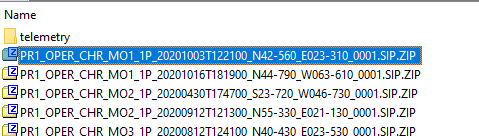

| Import CHRIS | |
The CHRIS reader enables the Sentinel Toolbox to import CHRIS/Proba HDF-4 data products.
A brief description about the sensor characteristics can be found at and latest data can be downloaded from . The CHRIS data is provided in the SIP format and needs to be manually extracted. When extracting the downloaded zip file, another zip file appears. This needs to be extracted too. This zip file contains also a zip file. This one contains the actual CHRIS/Proba data products in the hdf file format.
| Downloaded zip file |  |
| Second level zip file | |
| Thrid level zip file | |
| Content of zip file and the actual product files |
The following features characterize the reader:
Images 2 and 4 are flipped vertically in order to align all images equally.
One of the errors affecting CHRIS images is the fact that transmission of channel 2 randomly produces wrong odd pixels in image rows (drop-outs). A mask of invalid pixels is available only for product version v4.1. A mask refinement algorithm is used to improve this mask. For other product versions one is calculated from scratch.
The reader tries to corrrect all drop-out pixels by making use of both spatial and spectral information of the wrong pixel and its neighbours. Each invalid pixel is replaced by a weighted average of the values of the neighbouring pixels.
In order to avoid the poor performance of spatial filters in border or inhomogeneous areas, the contribution of each neighbour is weighted by its similarity to the corrected pixel. In particular, this similarity is the inverse of the Euclidean distance, which is computed locally using the closer upper and bottom spectral bands to the corrected band. The result of this process is similar to a spatial interpolation but taking into account the similarity with neighbours.
Values of bands with errors (indicated by the CHRIS quality mask) are not included in the computation of the spectral distance.